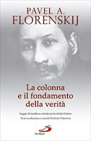
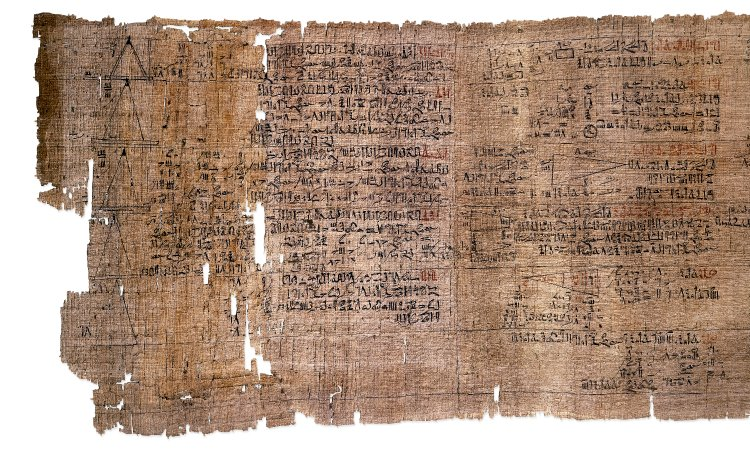
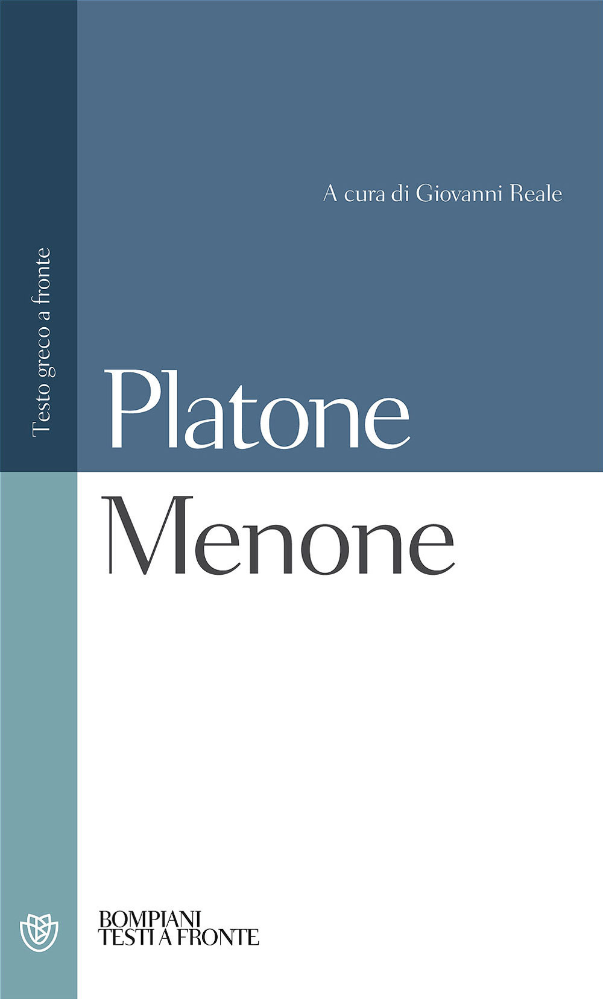
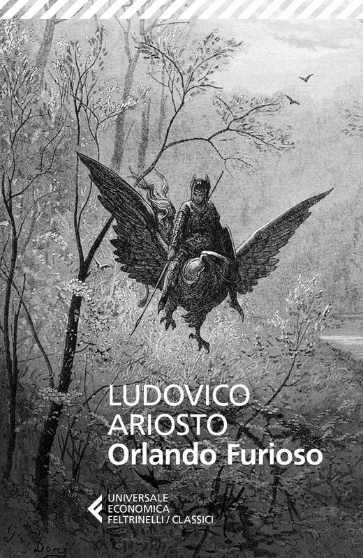
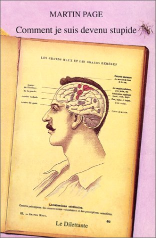
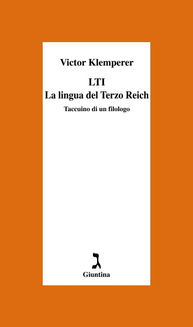
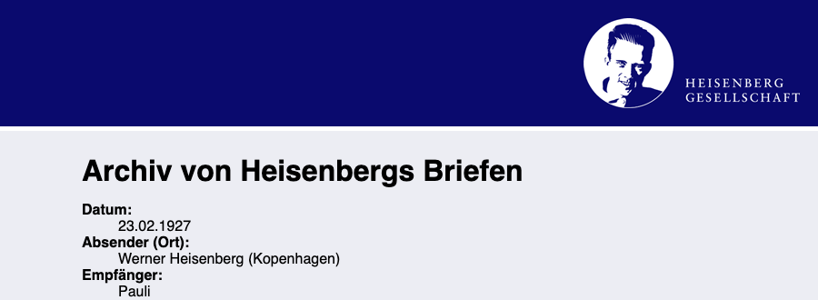
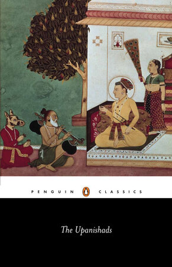
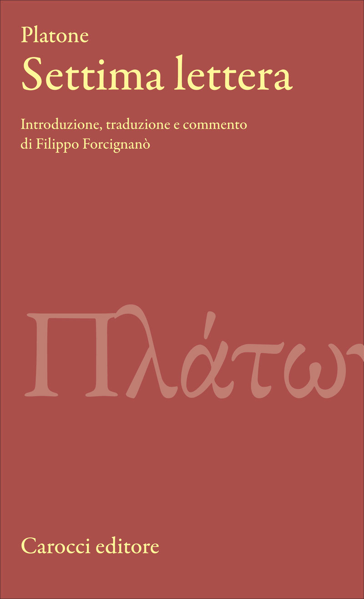

1:38:57 · 36 OPERE
Com'è possibile il sovvertimento del mondo? Conversazione con Andrea Grieco.
Il filo del discorso
La conversazione muove da La società del contrario di Dr Divago e dalla domanda su come possano essere rovesciati criteri di verità, giustizia e responsabilità che i parlanti considerano fondamentali. Il conduttore presenta Dr Divago come ospite, ne ricorda i lavori e legge una presentazione del libro: l’ignoranza vi appare soprattutto come rifiuto di imparare, oltre le utilità tecniche ed economiche immediate. Il giudizio negativo su accademia, editoria e informazione appartiene ai due interlocutori e non costituisce una verifica delle intenzioni di intere categorie professionali. Dr Divago riformula il tema come problema della formazione dell’essere umano. Per comprendere la modernità invita a ricostruire processi lunghi, senza ridurli a una data scolastica, e torna alla Grecia: la dimostrazione, il dialogo socratico e il chiarimento delle parole sono per lui strumenti contro l’autorità accettata passivamente. Menone, Gorgia e Repubblica offrono riferimenti diversi, dalla geometria al rapporto fra persuasione e potere. Il conduttore oppone a tratti il progetto ideale alla difficoltà dell’uomo storico; Dr Divago risponde che una cattiva realizzazione non basta a confutare un modello. La discussione di Platone e la critica a Popper restano interpretazioni filosofiche, senza trasformare le analogie sulla tirannide in diagnosi cliniche della società. L’argomento si allarga alla coscienza morale. La distinzione fra ciò che la legge permette e ciò che è giusto conduce a Caino e Abele, all’etica kantiana, a Primo Levi e alle riflessioni di Günther Anders sulla responsabilità tecnica. In seguito i due denunciano l’isolamento delle discipline e chiedono che scienza, poesia e filosofia tornino a parlarsi. Il romanzo di Martin Page Come sono diventato stupido introduce, con ironia, la tensione fra adattamento sociale e desiderio di comprendere la realtà. Klemperer, Orwell e Bernays accompagnano poi il tema della lingua, della propaganda e delle rappresentazioni mediatiche. La parte scientifica comprende logica, Turing, realismo, Schopenhauer e problemi della meccanica quantistica. Qui il confronto è anche un dissenso: i due attribuiscono significati diversi alla volontà e all’osservazione. La scheda distingue questi orientamenti dalle affermazioni verificabili: la meccanica quantistica modifica il trattamento delle grandezze fisiche, senza rendere semplicemente privi di significato posizione e tempo; la Bombe di Turing e Welchman era una macchina elettromeccanica specializzata, non il primo computer generale. Anche la digressione polemica sulle mascherine richiede una correzione: i filtri non funzionano come semplici reti a maglie larghe, e particelle respiratorie e aerosol sono fenomeni studiati sperimentalmente. La conversazione non viene usata per formulare indicazioni sanitarie. Nel finale il pessimismo sulle soluzioni collettive lascia spazio a un compito individuale: interrogare le proprie convinzioni, assumere responsabilità e riconoscere gli altri come fini. Dr Divago insiste però sulla dimensione politica ed educativa: una persona deve trovare condizioni che consentano di sviluppare il giudizio. Il richiamo alla Settima lettera e alle vicende siciliane di Platone riapre così il problema del passaggio dall’ideale alla storia. Il congedo non offre una soluzione immediata, ma ripropone studio, attenzione al linguaggio e autonomia come pratiche da coltivare.
I libri nel discorso

The Empty Campus
Identificazione probabile
Copertina: Lulu · edizione inglese di riferimento
Immagine associata all’ISBN di riferimento e controllata visivamente; edizione e traduzione non identificate come quelle citate o lette nel video.
riconoscimento_vocale_locale
Passaggio 0:25 ↗ · Fonti e libro ↗
Problemi filosofici della scienza
Foto parziale del volume mostrato, da fotogramma a 896 s; edizione non determinata: Fotogramma nativo intero del filmato La filosofia è scienza (e la scienza è filosofia), a 896 secondi: fotografia del volume effettivamente mostrato, con titolo Problemi Filosofici della Scienza e autore Dr Divago leggibili. La mano copre parte inferiore/destra della coperta e alcuni segnalibri sporgono. Immagine parziale del volume nel suo contesto, non copertina editoriale autonoma, frontespizio o ricostruzione grafica. Nessun editore, ISBN o anno è leggibile; edizione della copia non determinata.
2011 deriva dalla bibliografia dell’autore e dalla presentazione in un altro contributo, non da questo fotogramma. Il file mantiene l’intera inquadratura, il leggio e la lavagna; nessun ritaglio, raddrizzamento, ingrandimento, ritocco o completamento delle zone coperte.
59.86–72.55 s: nella presentazione dell’ospite, il conduttore ricorda un libro dal titolo Problemi filosofici della scienza, pubblicato nel 2011. Il nome Dr Divago è esplicito in apertura a 7.02 s.
Passaggio 1:05 ↗ · Fonti e libro ↗
La società del contrario
Copertina: Zambon · 2005
Copertina autentica dell’edizione di riferimento, controllata visivamente. Non identifica l’esemplare letto o citato nel video.
riconoscimento_vocale_locale
Passaggio 2:14 ↗ · Fonti e libro ↗
La colonna e il fondamento della verità. Saggio di teodicea ortodossa in dodici lettere
Copertina: San Paolo · seconda edizione, ottobre 2010
Immagine autentica dell’opera, controllata visivamente; l’edizione di riferimento non è attribuita al filmato.
riconoscimento_vocale_locale
Passaggio 16:11 ↗ · Fonti e libro ↗
Papiro matematico Rhind
Fotografia di un dettaglio del papiro matematico Rhind: British Museum · EA10057 · fotografia di un dettaglio del papiro antico
Fotografia autentica di una parte del recto della sezione EA10057. È un documento antico, non una copertina editoriale, un frontespizio o la riproduzione completa delle due sezioni. Provenienza fotografica dichiarata nella scheda Commons; datazione e identità riscontrate presso il museo.
riconoscimento_vocale_locale
Passaggio 18:19 ↗ · Fonti e libro ↗
Menone
Copertina: Bompiani · Testi a fronte · 2000
Copertina autentica dell’edizione di riferimento, controllata visivamente. Non identifica l’esemplare letto o citato nel video.
riconoscimento_vocale_locale
Passaggio 20:15 ↗ · Fonti e libro ↗
Etica
Identificazione probabile
Copertina: Laterza · Biblioteca Filosofica · 2009 · traduzione di Sergio Landucci
Immagine autentica dell’opera, controllata visivamente; l’edizione di riferimento non è attribuita al filmato.
riconoscimento_vocale_locale
Passaggio 23:29 ↗ · Fonti e libro ↗
Gli elementi
Copertina: Bompiani · Tutte le opere, raccolta contenente Gli elementi
La copertina illustra la raccolta Tutte le opere, che include Gli elementi; non è attribuita al video.
riconoscimento_vocale_locale
Passaggio 24:43 ↗ · Fonti e libro ↗
Gorgia
Identificazione probabile
Copertina: Gorgia, Bompiani, giugno 2001, a cura di Giovanni Reale, testo greco a fronte, 384 pagine, ISBN 9788845291111. Copertina ufficiale blu, bianca e verde acqua con titolo e autore; edizione di riferimento non identificata nel video.
Immagine autentica dell’opera, controllata visivamente; l’edizione di riferimento non è attribuita al filmato.
riconoscimento_vocale_locale
Passaggio 27:49 ↗ · Fonti e libro ↗
I cavalieri
Copertina: Knights, Richer Resources Publications, traduzione inglese di Ian Johnston, ISBN paperback 9781935238744. Copertina blu, nera e oro con due mani che tirano una fila di salsicce. Edizione inglese di riferimento, non identificata come esemplare del relatore.
Immagine autentica dell’opera, controllata visivamente; l’edizione di riferimento non è attribuita al filmato.
riconoscimento_vocale_locale
Passaggio 28:08 ↗ · Fonti e libro ↗
La Repubblica
Identificazione probabile
Copertina: Laterza · La Repubblica · edizione con testo a fronte di riferimento
Immagine associata all’ISBN di riferimento e controllata visivamente; edizione e traduzione non identificate come quelle citate o lette nel video.
riconoscimento_vocale_locale
Passaggio 29:24 ↗ · Fonti e libro ↗
La società aperta e i suoi nemici
Identificazione probabile
Copertina: Armando Editore · Classici · 2018 · volume unico
Copertina autentica di riferimento, controllata visivamente. L’edizione non è identificata come quella usata nel video.
riconoscimento_vocale_locale
Passaggio 31:30 ↗ · Fonti e libro ↗
Genesi
Identificazione probabile
Copertina: Einaudi, I libri della Bibbia / Einaudi Tascabili, 2000; introduzione di Steven Rose
Copertina dell’edizione autonoma Genesi, nella serie I libri della Bibbia, con introduzione di Steven Rose. Edizione scelta come riferimento iconografico; nessuna edizione è confermata nel video.
riconoscimento_vocale_locale
Passaggio 38:16 ↗ · Fonti e libro ↗
Critica della ragion pratica
Identificazione probabile
Copertina: Bompiani, 2000
riconoscimento_vocale_locale
Passaggio 41:14 ↗ · Fonti e libro ↗
Il pilota di Hiroshima, ovvero: la coscienza al bando / Burning Conscience
Identificazione probabile
Frontespizio con ritratto, edizione americana1962: Frontespizio con ritratto, non copertina esterna, da Burning Conscience, Monthly Review Press, New York1962, prima edizione americana; originale tedesco Off limits für das Gewissen1961. La seconda pagina della scansione conferma le date. Distinto dal volume italiano Linea d’Ombra1992, traduzione Renato Solmi.
Prima apertura della scansione universitaria, con ritratto a sinistra e frontespizio a destra. Non copertina esterna e non edizione italiana. PDF integrale conservato privatamente.
riconoscimento_vocale_locale
Passaggio 41:56 ↗ · Fonti e libro ↗
Se questo è un uomo
Copertina: Einaudi · Saggi 232, 1958 · sovraccoperta Bruno Munari
Riproduzione autentica della sovraccoperta dell’edizione Einaudi 1958, conservata e descritta dal Centro Internazionale di Studi Primo Levi. Non è l’edizione De Silva del 1947 né la versione teatrale. Nessun ISBN moderno attribuito retroattivamente.
riconoscimento_vocale_locale
Passaggio 42:13 ↗ · Fonti e libro ↗
Orlando furioso
Identificazione probabile
Copertina: Feltrinelli · Universale Economica Classici · 2016 · edizione in due volumi
Copertina editoriale di riferimento per l’edizione in due volumi indivisibili; l’immagine non mostra entrambi i volumi e non identifica un esemplare del video.
riconoscimento_vocale_locale
Passaggio 42:37 ↗ · Fonti e libro ↗
Critica del giudizio
Copertina: Bompiani, 2015
riconoscimento_vocale_locale
Passaggio 43:35 ↗ · Fonti e libro ↗
Apologia di Socrate
Identificazione probabile
Copertina del volume Apologia di Socrate. Critone: BUR · Apologia di Socrate. Critone · a cura di Maria Michela Sassi, 1993
Copertina autentica del volume BUR contenente Apologia di Socrate e Critone. Il secondo titolo non è aggiunto come citazione del video; l’autore del testo è Platone, con Socrate come figura protagonista.
riconoscimento_vocale_locale
Passaggio 51:00 ↗ · Fonti e libro ↗
Come sono diventato stupido (Comment je suis devenu stupide)
Copertina: Copertina ufficiale francese, Le Dilettante, Comment je suis devenu stupide, 2001, ISBN 9782842630409, illustrazione Anne-Marie Adda. Stessa opera pubblicata in italiano anche come Perché sono diventato stupido; specifico esemplare del relatore non confermato.
Copertina autentica dell’opera o della raccolta dichiarata; nessun esemplare o ristampa materialmente mostrato nel video è confermato.
riconoscimento_vocale_locale
Passaggio 52:30 ↗ · Fonti e libro ↗
LTI. La lingua del Terzo Reich. Taccuino di un filologo
Copertina: Giuntina, Schulim Vogelmann 72, 355 pagine, ISBN 9788880570721. La pagina editoriale indica anno 1999 e tre riedizioni; altri cataloghi datano esemplari 1998 o 2008, senza che questo identifichi la copia del filmato. A cura di Elke Fröhlich, traduzione di Paola Buscaglione, prefazione di Michele Ranchetti. Originale tedesco LTI. Notizbuch eines Philologen, 1947.
Immagine autentica dell’opera, controllata visivamente; l’edizione di riferimento non è attribuita al filmato.
riconoscimento_vocale_locale
Passaggio 58:13 ↗ · Fonti e libro ↗
1984
Copertina: Newton Compton · edizione illustrativa
riconoscimento_vocale_locale
Passaggio 58:20 ↗ · Fonti e libro ↗
Genius: Einstein (prima stagione)
Identificazione probabile
Copertina: Still ufficiale della première Tribeca 2017: Geoffrey Rush nel ruolo di Einstein
Immagine promozionale autentica fornita dal festival per Genius: Geoffrey Rush interpreta Einstein al violino. Non è una fotografia storica dello scienziato, una copertina DVD o un’immagine del film Schiemann. Il titolo del prodotto citato nel video resta probabile.
riconoscimento_vocale_locale
Passaggio 59:44 ↗ · Fonti e libro ↗
Satira X, dalle Satire
Identificazione probabile
Copertina della raccolta: COPERTINA DELLA RACCOLTA The Sixteen Satires, Penguin Classics, 1 febbraio 1999, 320 pagine, traduzione, introduzione e note di Peter Green, ISBN 9780140447040. La Satira X è contenuta nella raccolta completa, non pubblicata in questo volume come opera autonoma.
Copertina ufficiale Penguin, intera: dipinto antico con due figure, fascia bianca e nera con autore e titolo della raccolta. Non è una selezione che omette la Satira X.
riconoscimento_vocale_locale
Passaggio 1:02:57 ↗ · Fonti e libro ↗
La strada di Wigan Pier
Copertina: Alma Classics, 2024 · The Road to Wigan Pier · edizione inglese di riferimento
riconoscimento_vocale_locale
Passaggio 1:03:37 ↗ · Fonti e libro ↗
Il Principe
Copertina: Feltrinelli · 2013 · a cura di Ugo Dotti
Immagine autentica dell’opera, controllata visivamente; l’edizione di riferimento non è attribuita al filmato.
riconoscimento_vocale_locale
Passaggio 1:05:07 ↗ · Fonti e libro ↗
Propaganda
Copertina: Apogeo · Saggi, marzo 2026 · traduzione e redazione Aldo Ballerini
Copertina autentica dell’edizione Apogeo del marzo 2026, successiva alla registrazione del video: è un riferimento bibliografico attuale, non l’esemplare citato nel filmato. Titolo originale dell’opera Propaganda, 1928.
riconoscimento_vocale_locale
Passaggio 1:05:29 ↗ · Fonti e libro ↗
Critica della ragione pura
Copertina: Adelphi · Gli Adelphi 85, 1995 · traduzione e cura Giorgio Colli
Immagine autentica dell’opera, controllata visivamente; l’edizione di riferimento non è attribuita al filmato.
riconoscimento_vocale_locale
Passaggio 1:10:04 ↗ · Fonti e libro ↗
Il mondo come volontà e rappresentazione
Copertina: Newton Compton · edizione di riferimento
riconoscimento_vocale_locale
Passaggio 1:10:15 ↗ · Fonti e libro ↗Nature (Natura)
Identificazione probabile
Copertina: Copertina ufficiale della raccolta Nature and Selected Essays, Penguin Classics, 2003, a cura di Larzer Ziff, ISBN 9780142437629. Contiene Nature del 1836 e altri saggi: raccolta dichiarata, non copertina della prima edizione autonoma.
Copertina autentica dell’opera o della raccolta dichiarata; nessun esemplare o ristampa materialmente mostrato nel video è confermato.
riconoscimento_vocale_locale
Passaggio 1:13:41 ↗ · Fonti e libro ↗
Lettera a Wolfgang Pauli, 23 febbraio 1927
Identificazione probabile
Intestazione della scheda archivistica · Heisenberg-Gesellschaft: Intestazione nativa della scheda archivistica Heisenberg-Gesellschaft relativa alla lettera di Werner Heisenberg a Pauli del23 febbraio 1927. Riproduce titolo del portale, data, mittente e destinatario; non è il manoscritto né la copertina di un libro.
Cattura originale Chrome della pagina pubblica specifica,900×330 pixel; nessun corpo della lettera, modifica DOM/CSS, ritaglio successivo, ricomposizione, padding o ingrandimento. La versione precedente con testo troncato è esclusa.
A 4553.93–4580.73 s l’interlocutore introduce Heisenberg e una lettera a Pauli; a 4580.73–4595.31 s parafrasa il rapporto fra traiettoria classica e osservazione. Nome/destinatario e contenuto espliciti; data e titolo documentario non pronunciati.
Passaggio 1:15:53 ↗ · Fonti e libro ↗
Upaniṣad (raccolta di testi vedici)
Copertina della selezione The Upanishads,traduzione di Juan Mascaró: Copertina della selezione The Upanishads,Penguin Classics,144pagine,traduzione e cura di Juan Mascaró,ISBN9780140441635. Il catalogo statunitense data la pubblicazione al30novembre1965,quello britannico la ristampa al24febbraio2005. Non è la totalità del corpus,né la traduzione conosciuta daSchopenhauer.
Raccolta moderna di riferimento,non autore unico,non traduzioneOlivelleOxford e non edizione citata daSchopenhauer. La miniatura autentica mostra una scena indiana e il titolo Penguin; vista interamente.
riconoscimento_vocale_locale
Passaggio 1:16:56 ↗ · Fonti e libro ↗Fisica e filosofia. La rivoluzione nella scienza moderna (Physics and Philosophy)
Copertina: Copertina ufficiale il Saggiatore dell’edizione italiana Fisica e filosofia, ISBN 9788842821595. Opera originale del 1958; immagine di una ristampa italiana, non prova dell’edizione citata materialmente.
Copertina autentica dell’opera o della raccolta dichiarata; nessun esemplare o ristampa materialmente mostrato nel video è confermato.
riconoscimento_vocale_locale
Passaggio 1:17:55 ↗ · Fonti e libro ↗
Über die Buchmacherei. Zwei Briefe an Herrn Friedrich Nicolai
Frontespizio: edizione del 1798: Königsberg, Friedrich Nicolovius, 1798, 22 pagine; Akademie-Ausgabe VIII, pp. 433–438. Facsimile del frontespizio della prima edizione riprodotto nella bibliografia universitaria di Steve Naragon; non copertina esterna.
Frontespizio autentico visto integralmente: Ueber die Buchmacherey, Zwey Briefe an Herrn Friedrich Nicolai, Immanuel Kant, Königsberg, Friedrich Nicolovius, 1798; presenti segnature manoscritte dell’esemplare digitalizzato. Ortografia storica conservata nell’immagine e titolo modernizzato nella voce.
riconoscimento_vocale_locale
Passaggio 1:28:01 ↗ · Fonti e libro ↗
Fondazione della metafisica dei costumi
Identificazione probabile
Copertina: Laterza · Economica Laterza 122 · Filippo Gonnelli, edizione 1997 e ristampe
Immagine autentica dell’opera, controllata visivamente; l’edizione di riferimento non è attribuita al filmato.
riconoscimento_vocale_locale
Passaggio 1:31:11 ↗ · Fonti e libro ↗
Settima lettera
Copertina: Carocci · Classici · 2020, ristampa 2024 · a cura di Filippo Forcignanò
Immagine autentica dell’opera, controllata visivamente; l’edizione di riferimento non è attribuita al filmato.
riconoscimento_vocale_locale
Passaggio 1:37:06 ↗ · Fonti e libro ↗